1. Problema
Recursos dispersos y sin administración común
Diseñar y evaluar técnicamente una nube privada basada en OpenStack para ejecutar aplicaciones de IA con aceleración por GPU, con FASHN VTON v1.5 y un clasificador de prendas como casos de estudio, y determinar su viabilidad.
OE1
Identificar requerimientos y capacidades de los equipos
Diseñar la arquitectura de nube privada con WireGuard
 OE3
OE3
Implementar OpenStack, la conectividad y la asignaciòn de la GPU
OE4Integrar VTON y el descriptor de prendas como casos de estudio
Evaluar rendimiento, monitoreo y pruebas de carga
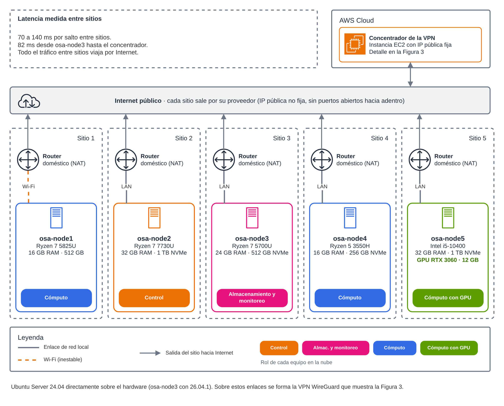
El hub tiene IP fija; cada sitio sale por su router doméstico y funciona tras NAT. Detalle en la lámina siguiente.
Por salto entre sitios; la MTU de la red privada se fijó en 1370 B.
Controlador, almacenamiento, cómputo y un nodo con GPU.
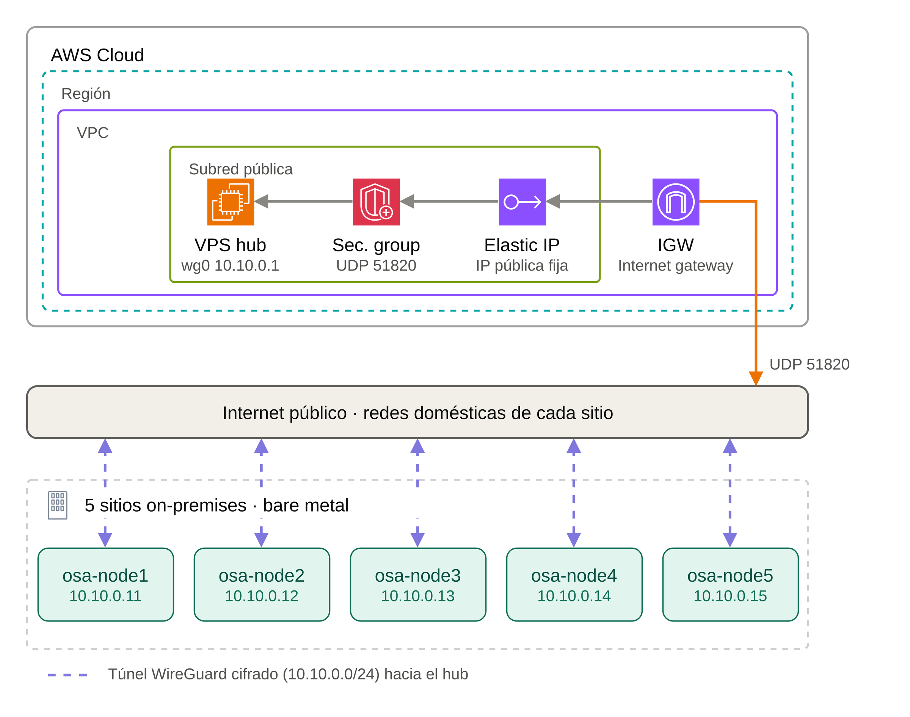
Cada nodo toma una dirección 10.10.0.x (de .11 a .15) y el hub EC2 es .1. Todo el tráfico entre sitios pasa por el túnel.
Cada sitio inicia la conexión al hub por UDP 51820; el grupo de seguridad solo abre ese puerto para WireGuard.

El Elastic IP vive en el hub; las casas tienen IP pública variable y no necesitan abrir nada en su router.
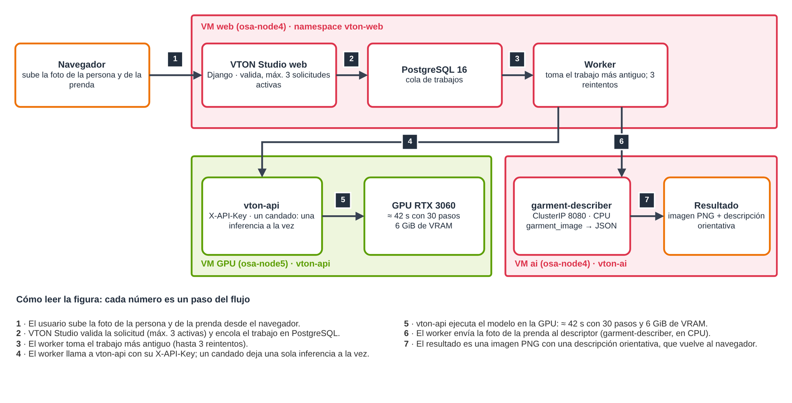

La GPU atiende un trabajo; los demás esperan en la cola de PostgreSQL.
Máximo 3 solicitudes activas por persona; la API exige clave.
El worker consulta al descriptor y la imagen se entrega igual si este falla.
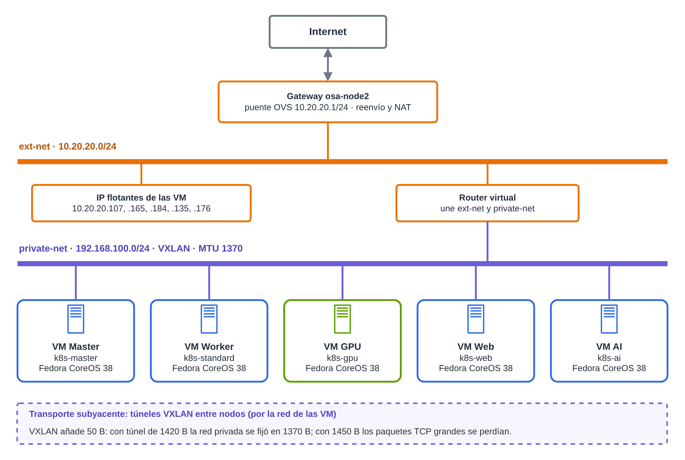
private-net 192.168.100.0/24 (VXLAN) para las VM y ext-net 10.20.20.0/24 con las IP flotantes, unidas por un router virtual.
Master, Worker, GPU, Web y AI reciben IP flotante (.107, .165, .184, .135 y .176) en ext-net.
VXLAN añade 50 B sobre un túnel de 1420 B; con 1450 B los paquetes TCP grandes se perdían.
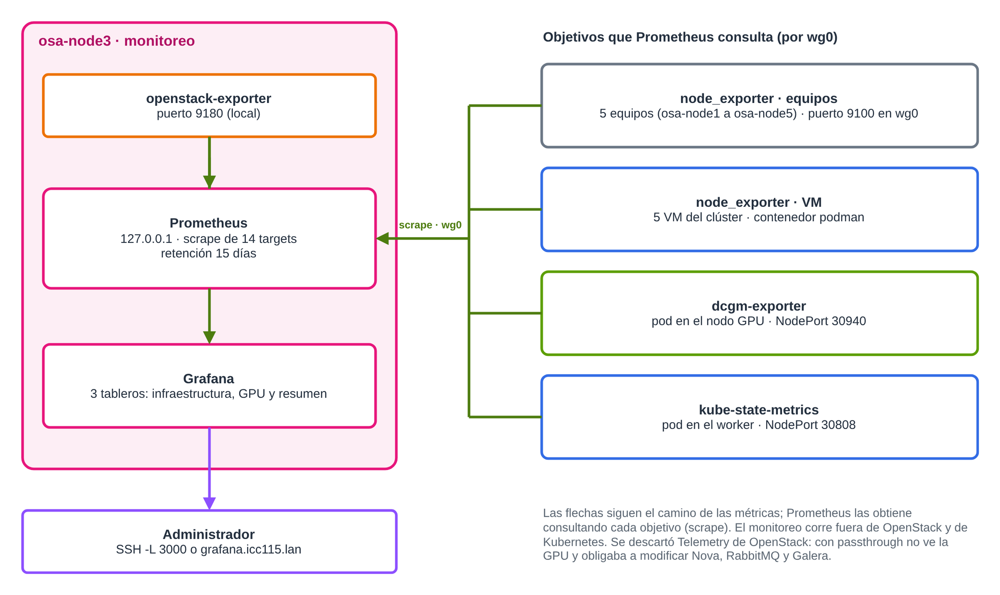
5 equipos y 5 VM con node_exporter, más dcgm-exporter (GPU), kube-state-metrics, openstack-exporter y el propio Prometheus.
Prometheus consulta por wg0 con retención de 15 días; Grafana muestra 3 tableros: infraestructura, GPU y resumen.
Se descartó Telemetry de OpenStack: con passthrough no ve la GPU y obligaba a modificar Nova, RabbitMQ y Galera.
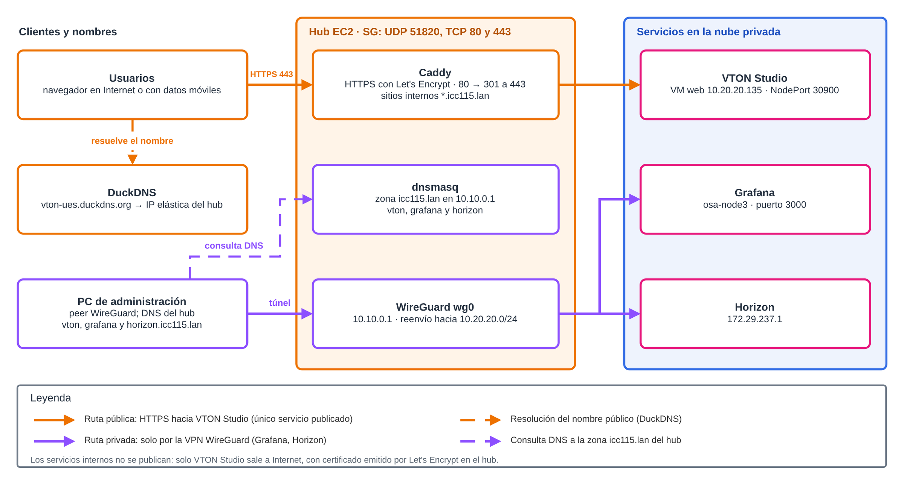
Solo VTON Studio sale a Internet, con certificado de Let's Encrypt que se renueva solo.
Zona icc115.lan en el hub; Grafana y Horizon solo se alcanzan por la VPN.
El hub abre UDP 51820 (WireGuard) y TCP 80 y 443; el resto queda cerrado.
Tarifas de lista bajo demanda consultadas en noviembre de 2026; las instancias no son idénticas a la RTX 3060 del equipo propio.
OpenStack, Kubernetes y WireGuard son software libre.
Solo la instancia EC2 del concentrador.

Factible en un escenario controlado; no es un estudio económico integral.
Cinco equipos dispersos se integraron en una nube privada con OpenStack, Kubernetes y una GPU compartida.

VTON v1.5 corre en la GPU de la nube y el descriptor en CPU, con pesos entrenados fuera de ella.
Es un prototipo funcional en escenario controlado, no apto para producción sin TLS interno, alta disponibilidad y respaldos.
Procedimientos, configuraciones y fallas documentados para repetir la construcción.
Sin notas.